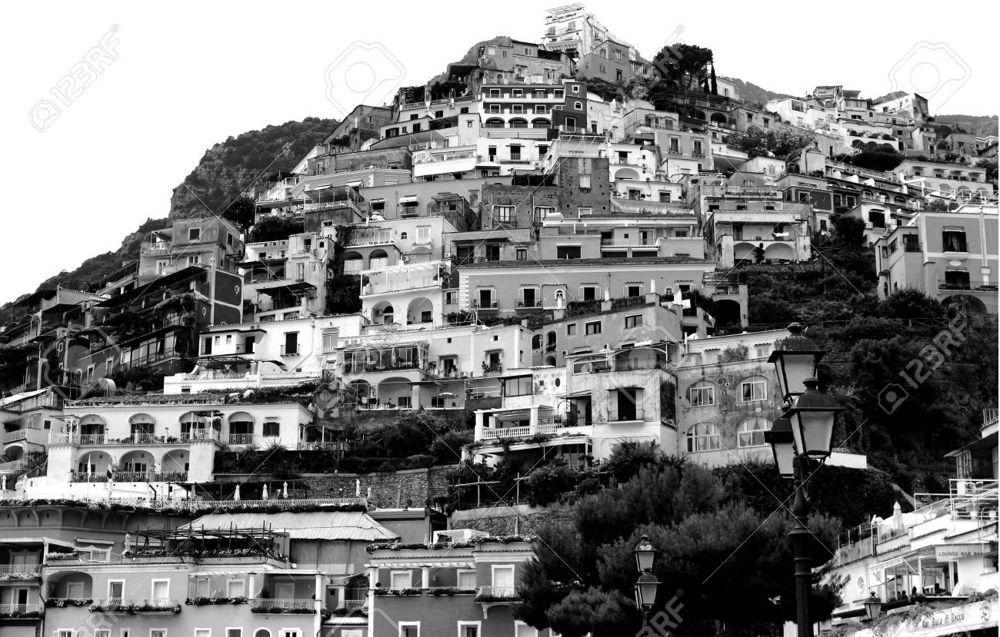
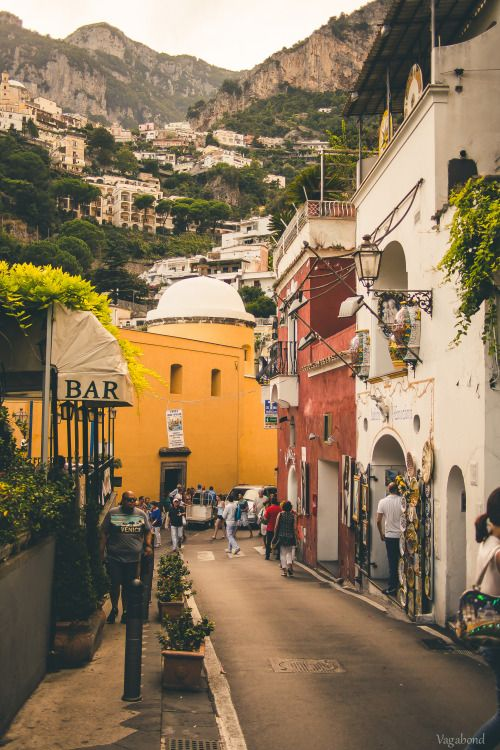

POSİTANO

Positano, ortaçağda Amalfi Cumhuriyeti'nin bir limanıydı ve 16 ve 17. yüzyıllarda zenginleşti. Fakat 19. yüzyılın ortalarıyla beraber kasaba zor zamanlardan geçti ve nüfusunun yarısından fazlası çoğunlukla Amerika'ya göç etti.
Positano 20. yüzyılın ilk yarısında fakir bir balıkçı köyü durumundaydı. Fakat özellikle Mayıs 1953'te Harper's Bazaar'da yayınlanan John Steinbeck'in Positano üzerine olan yazısından sonra çok sayıda turist çekmeye başladı.
Pişmiş topraktan bir basamak ile evlerin arasından denize inilen Positano, Fransa'dan ilk bikini ithal eden İtalyan yerleşimidir. İtalya'nın tatil kültürünü yansıtan bir atmosfere sahip olan kasabada beyaz, sarı ve pembe badanalı
Akdeniz evleri, çakıl taşlı plajlar ve masmavi deniz görsel bütünlüğü oluşturmaktadır. Balayı ve düğün organizasyonu için tercih edilen edilebilecek olan kasaba, Avrupa'nın en romantik noktalarından biri olarak değerlendirilmektedir.

Positano'da Antik Roma izleri göze çarpmaktadır. Sahilde çok sayıda görkemli villa Roma imzası taşımaktadır.Benedik'tin manastırı etrafında gelişmiş olan kasabanın 9.yüzyılda kurulduğu düşünülmektedir. Positano 1268 yılında
Pisa tarafından saldırıya uğramıştır. Bunun üzerine komşusu Amalfi'ye benzer şekilde Positano'da güvenlik şartlarını geliştirmek üzere dar yollar, muazzam surlar ve bir dizi önemli saat kulesi inşaa etmiştir.
Positano'nun kaderi tarihte hep inişli çıkışlı olmuştur.1343 yılında gerçekleşen korkunç bir tsunami ile birlikte tahrip olan kasaba,15.yüzyılda Osmanlı korsan gemileri tarafından gerçekleştirililen devamlı saldırıların kurbanı olmuştur.
İtalya'nın birleşmesi ve bir dizi yeni ticaret yollarının açılmasıyla birlikte ise giderek ufalmış ve bir balıkçı kasabasından daha küçük hale gelmiştir.1950'lerden itibaren sanatçı ve yazarların ilgisiyle birlikte ünlenmeye başlayan Positano'yu her yıl binlerce
turist ziyaret etmektedir.